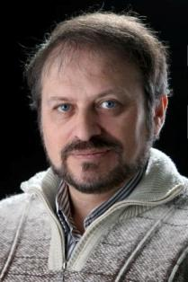
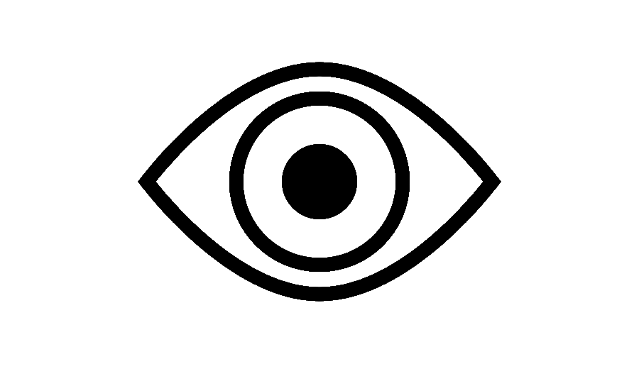

|

|
Alexander ROSHAL
Curriculum vitae
-
Date and place of birth: June 9, 1962; Kharkov, UKRAINE
-
Citizenship: ukrainien
-
Marital status: Married, 1 child
|
Academic degrees and titles
-
M.Sc. in Physical Chemistry, 1985, Department of Chemistry,
Kharkov State University, UKRAINE. Supervisor - Prof. Dr. M. Zhedek. Title of thesis:
Qualitative analysis of alfalfa phenolic compounds (isoflavones) by thin layer
chromatography.
-
Ph.D. in Chemistry (speciality - Organic Chemistry), 1993, Department of Chemistry,
Kharkov State University, UKRAINE. Supervisor - Prof. Dr. V.D. Orlov. Title of dissertation: “Isoflavones:
synthesis, acidic, basic and spectral properties"
-
Dr.hab. in Chemistry (Docteur habilité en chimie), 1999,
Laboratory IMRCP, Paul Sabatier University, Toulouse, FRANCE. Consultant - Prof. Armand Lattes.
Title of dissertation: “Flavonoides non saturés : complexation et propriétés spectrales”.
Research Activity (until January 2026)
-
205 papers
-
26 patents
-
226 presentations at scientific conferences
-
11 scripts
-
19 handbooks and books of problems
Employment History for 30 last years
-
Beginning of the working experience in 1979
-
1993-1995 - Research fellow, Department of
Physical Organic Chemistry, Institute of Chemistry, V.N. Karazin Kharkiv
National University, Kharkiv, Ukraine.
-
1995 - Post-doctoral research fellow, Laboratory of
physico-chemistry of luminescent materials (stage supervisor A. Brenier), Claude Bernard
University, Lyon, France.
-
1995-1998 - Senior Researcher, Department of
Physical Organic Chemistry, Research Institute of Chemistry, Kharkiv V.N. Karazin
National University, Kharkiv,
Ukraine.
-
1998-1999 - Associated Researcher at CNRS,
Laboratory of Molecular Interactions, Chemical and Photochemical Reactivity, UMR 5623,
University Paul Sabatier, Toulouse, France.
-
1999-2003 - Senior Researcher, Department of Physical Organic Chemistry, Research Institute
of Chemistry, V.N. Karazin Kharkiv National
University, Kharkiv, Ukraine.
-
2003 - Associated NATO research fellow, University
Castilla - La Mancha, Faculty of Environment Sciences, Physical Chemistry Department, Toledo, Spain.
-
2003-2007 - Senior Researcher, Department of Physical Organic Chemistry, Research Institute
of Chemistry, V.N. Karazin Kharkiv National University, Kharkiv, Ukraine.
-
2007 (May-July) - Invited Professor of Faculty of Environment Sciences
(Physical Chemistry Department), University Castilla - La Mancha, Toledo, Spain.
- 2007-2016 - Senior Researcher, Department of Physical Organic Chemistry, Research Institute
of Chemistry, V.N. Karazin Kharkiv National University, Kharkiv, Ukraine.
- 2017-2021 Head of the Department of Physical Organic Chemistry, Research Institute
of Chemistry, V.N. Karazin Kharkiv National University, Kharkiv, Ukraine.
- 2021 - by now Acting Director of the Research Institute
of Chemistry at V.N. Karazin Kharkiv National University, Kharkiv, Ukraine.
Pedagogical Activity
-
1995-1996 - Lecturer. College of Computer and
Patent Sciences. Kharkiv, Ukraine.
Course: "Organic Chemistry".
-
1995-2002 - Teacher. Classical school N45, Kharkiv, Ukraine.
Courses:
"Interesting chemistry" -
optional subject for pupils of 5-7 years,
General school course of
chemistry for pupils of 8-11 years.
-
2003-2007 -
Teacher. Private classical school "Boiko School in Kharkiv", Kharkiv, Ukraine.
- Course: Introductory course of chemistry for pupils of 5-7 years.
-
2009-2016 - Invited Professor. Faculty of chemistry, University of Gdansk, Gdansk, Poland.
- Course: "Photonics of molecules" (in Polish language) for PhD students.
-
2011-2018 - Associate Professor. Materials
Chemistry Department, School of Chemistry, Kharkiv V.N. Karazin National University, Kharkiv, Ukraine.
-
Course: "Bioorganic Chemistry" (in English language) for 1st-year foreign
students of the School of medicine,
-
Course: "Electronic spectroscopy" (in Ukrainian and
Russian languages) for master (M1) students of the School of chemistry,
-
2016-2021 - Full Professor.
Department of organic synthesis and nanotechnologies, School of organic
Chemistry and Technology of Organic Compounds, Kharkiv Technical University
"Kharkiv Polytechnic Institute",
Kharkiv, Ukraine.
-
Course: "Physico-chemical bases of the analysis of biologically active
compounds" (in Ukrainian language) for 5th-year students.
-
2018 - by now - Full Professor. Materials
Chemistry Department, School of Chemistry, Kharkiv V.N. Karazin National University, Kharkiv, Ukraine.
- Course: "Polymer chemistry" (in Ukrainian language) for 3rd-4th-year students of the Chemical Faculty,
- Course: "Bioorganic Chemistry" (in English language) for 1st-year foreign students of the School of medicine,
- Course: "Applied Spectroscopy / Electronic Spectroscopy" (in English language) for 3rd-year students of the Material, Chemistry and Chemical Engineering at Hangzhou Normal University
- Course: "Chemistry of Narcotic, Psychotropic and Toxic Substances of Natural and Synthetic Origin" (in Ukrainian language) for 1st-year master students of the Chemical Faculty,
- Course: "Examination of narcotic, psychotropic substances and precursors" (in Ukrainian language) for 2òâ-year master students of the Chemical Faculty,
* * *
During 2000-2001 years, I have developed a syllabus of propaedeutic course of chemistry "Interesting chemistry" for pupils of 5-7 years.
During 2001-2002 years, I have written a manual for this course "Chemistry - it is simple", which was published in Russian in 2002
(Publishing house "Ranok") and in Ukrainian in 2004 (Publishing house "Osnova", enlarged edition).
During 1997-2007, 12 books of problems, workbooks, books of practical works for school pupils of 7-11 years, as well as 6 methodolodgical guides for school teachers were published.
Supervising MSc and PhD students
During last 15 years, I was a supervisor of more than 30 student's scientific graduate works.
I was a supervisor of 7 defended PhD
dissertation works.
Titles of defended PhD
dissertations:
-
Sakhno T.V.
Complex formation and spectral properties of 3-hydroxychromone derivatives,
2004.
-
Lvovska M.I.
Electronic structure and spectral properties of 3-hetarylchromones, 2006.
-
Moroz V.V.
Protolytic equilibria and complex formation of diflavonol derivatives in the excited and ground states, 2008.
-
Sanin E.V.
Spectral properties of coumaroyl benzopyrylic salts: influence of interfragmental charge transfer
and nucleophile solvation, 2015.
-
Serdiuk I.E.
Synthesis and spectral features of flavones in which intra- and intermolecular proton transfer occurs, 2016.
-
Mudrak V.A.
Synthesis and photochemical properties of ruthenium complexes with
nitrozyl ligand and luminescent antennas for photoactivating
chemotherapy. 2024.
-
Demidov O.O.
Synthesis, prototropic equilibria and complexation of 4'-hydroxy flavonol derivatives, 2025.
Postgraduate studies occuring now:
-
Vashchenko O.V.
Synthesis and characterization of anisotropic polymers 2023.
Participation in scientific projects
-
Design of high-efficiency luminophores and laser dyes for violet and ultra-violet spectral range.
Project of ministry of education and science of Ukraine N 01880038647 ,
1.01.1992 - 30.12.1994, project director - prof. Ponomariov O.A. (my function is a
project executor).
-
Development of database of fluorophores and laser dyes.
Project of ministry of education and science of Ukraine N 194U021414.
1.01.1995 - 30.12.1997, project director - prof. Ponomariov O.A. (project executor).
-
Photonics and intermolecular interactions of ionic organic luminophores.
Project of ministry of education and science of Ukraine N 0197U002449.
1.01.1998 - 30.12.2000, project director - prof. Doroshenko A.O. (project vice-director).
-
Photonics of luminophores with abnormally high Stokes shifts: fluorescent probes of a new type.
Project of ministry of education and science of Ukraine N 0199U004432.
1.01.1998 - 30.12.2000, project director - prof. Doroshenko A.O. (project vice-director).
-
Intramolecular hydrogen bonds and charge transfer in excited fluorophore molecules.
Project of ministry of education and science of Ukraine N 0101U002779.
1.01.2001 - 30.12.2003, project director - prof. Doroshenko A.O. (project vice-director).
-
New fluorescent probes and markers-conjugates for biological investigations.
Project of ministry of education and science of Ukraine N 0104U00659.
1.01.2004 - 30.12.2006, project director - prof. Doroshenko A.O. (project vice-director).
-
Polycyclic luminescent dyes for biological investigations.
Project of ministry of education and science of Ukraine N 0107U000662.
1.01.2007 - 30.12.2009, project director - prof. Doroshenko A.O. (project vice-director).
-
Design of multiplex analytical systems for environment polution testing and medical
diagnostics using classification dyes.
Project of Ukrainian Scientific and Technical Centre N STCU#3795.
1.08.2007 - 30.07.2009, project directors - Dr. Patsenker L.D. and Dr.hab. Roshal A.D. (project director).
-
Systems with proton and charge transfer for development of sensor materials
Project of ministry of education and science of Ukraine N 0110U000582.
1.01.2010 - 30.12.2012, project director - prof. Doroshenko A.O. (project vice-director).
-
Chemosensors and nanometrials based on new organic fluorophores with proton photo transfer.
Project of ministry of education and science of Ukraine N 0110U000582.
1.01.2013 - 30.12.2015, project director - prof. Doroshenko A.O. (project vice-director).
-
The design of new spirocyclic systems containing condensed heterocyclic fragment.
Common project of ministeries of education and science of Ukraine and Russia (F53/92-2013) N 0113U002803.
1.01.2013 - 30.12.2014, project director - prof. Doroshenko A.O. (project vice-director).
-
A study of chemical composition, structure, formation and accumulation mechanisms of biogenes
in some areas of the Argentine Islands and the surrounding areas.
Project of the National Antarctic scientific center of Ukraine (n/6-2013) N 0113U005817,
1.08.2013 - 31.12.2013, project director - Dr.hab. Roshal A.D. (project director).
-
New sensor systems and nanomaterials based on silica-organic hydrids with anchored fluorofors and electroactive layers.
Project of ministry of education and science of Ukraine N 0115U000484 .
1.01.2015 - 30.12.2017, project director - Prof. Kholin Yu.V. (project executor).
-
New fluorescent sensor materials for multiparametric determination toxic heavy metals.
Project of ministry of education and science of Ukraine N 0116U000835 .
1.01.2016 - 30.12.2018, project director - Prof. Doroshenko A.O. (project vice-director).
-
"Smart" ligands for selective determination of metal ions based on fluorophore systems with the proton phototransfer.
Project of ministry of education and science of Ukraine N 0119U002536.
1.01.2019 - 30.12.2021, project director - Prof. Roshal A.D. (project director).
-
Chromone-based fluorescent indicators for determination of β-glucosidase activity.
Project of National Research Foundation of Ukraine N 0120U105227 / 0121U112517.
17.10.2020 - 31.12.2023, project director - Prof. Roshal A.D. (project director).
-
Noble metal nanoparticles functionalized with stimuli-sensitive ligands and fluorescent dyes for targeted delivery and monitoring needs.
Project of ministry of education and science of Ukraine N 0122U001388.
1.01.2022 - 31.12.2024, project director - Prof. Kyrychenko A.V. (project vice-director).
-
Fluorescent heterocyclic ligands for binding, analysis and accumulation of radioactive isotopes of divalent metal ions.
Project of ministry of education and science of Ukraine N 0122U001387.
1.01.2022 - 31.12.2024, project director - Prof. Roshal A.D. (project director).
Ongoing projects
-
Functionalized fluorescent organic gels for determination, accumulation
and monitoring of radionuclides and ecotoxicant metals.
Project of National Research Foundation of Ukraine N
0124U005059.
1.08.2024 - 15.12.2026, project director - Prof. Roshal A.D. (project director).
Grants and awards
-
2001. The grant of international Society "Goupe Polyphenols" (France).
-
2003. The NATO grant (Belgium, Spain).
-
2007, 2010. Grants of the Ministry of education and science of
Spain (Spain).
-
2002 - 2014. Annual grants of the Ministry of education and science of Poland (Poland).
-
2022 - 2023. Annual grant of American Councils for International Education
(USA-Ukraine).
-
2022 - 2025. Annual grant of Simons Fundation (USA). Presidential Discretionary-Ukraine Support Grants.
-
2025 - 2026. Grant of Conductive Organics enterprise (USA).
-
1990. The medal "Inventor of USSR" of the Society of rationalizers
and inventors of the Soviet Union.
|
|
2021. Winner of the XXIII regional competition "Higher School of the Kharkiv region - the best names" in the nomination "Scientist"
|

|